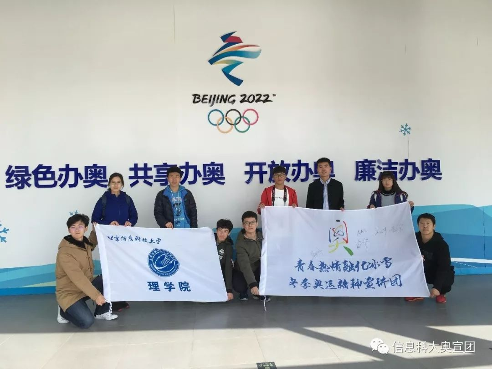
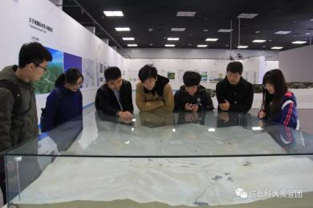
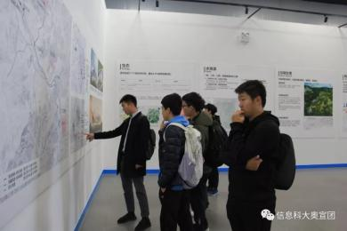
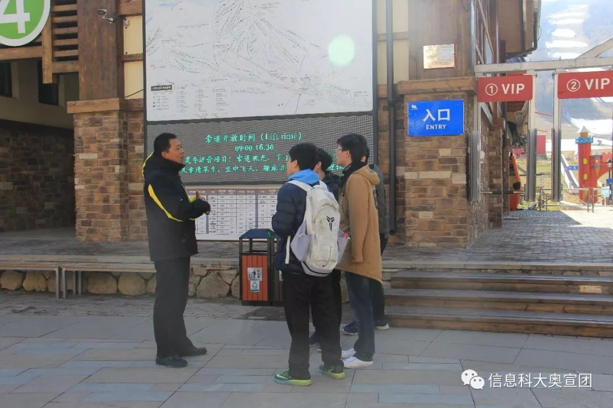
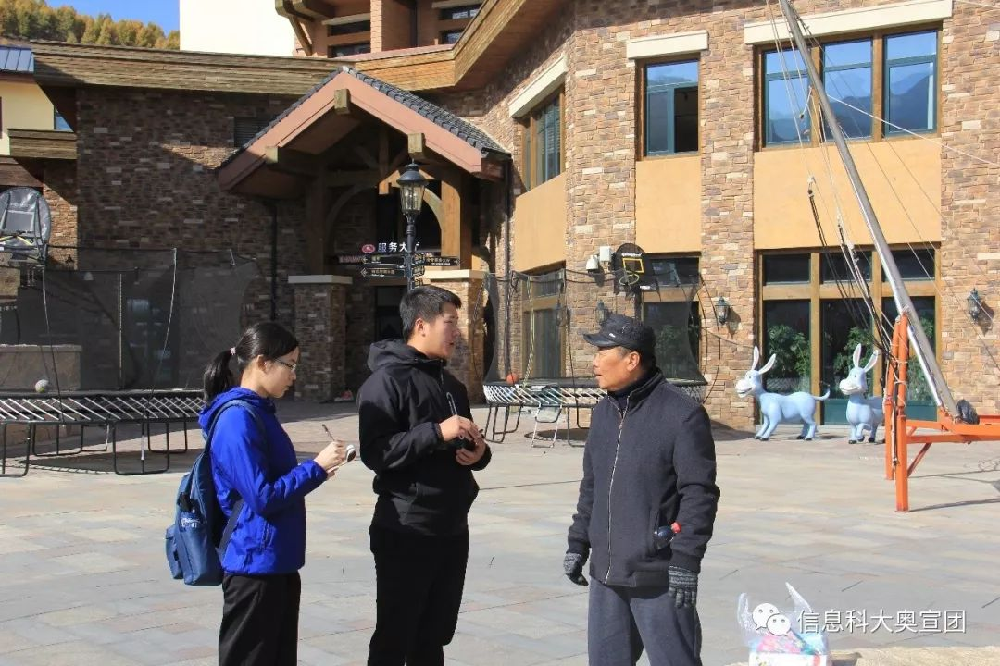
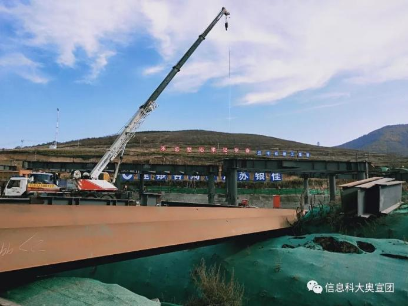
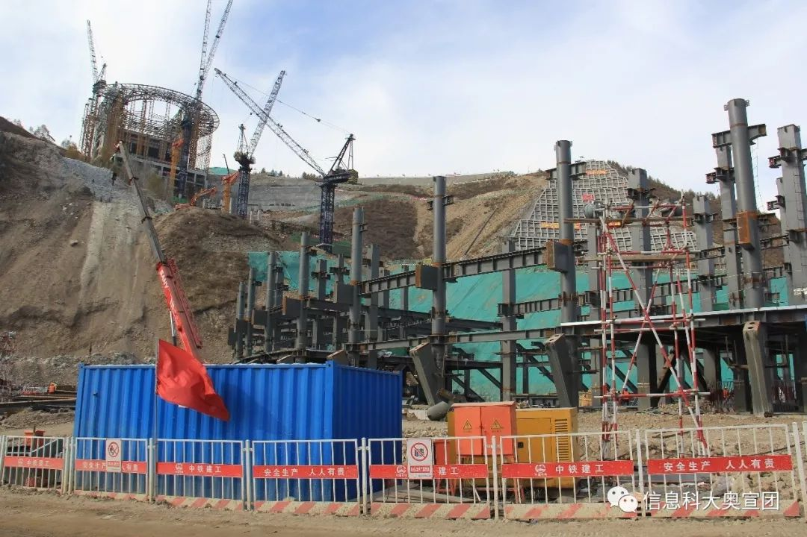

“青春热情融化冰雪”
——理学院师生团队赴张家口开展社会实践
【来源】：信息科大奥宣团 | 2019-10-22
为推广奥运精神、普及冬奥知识，围绕2022冬奥会，立足首都，面向京冀地区，探索张家口崇礼等地冬奥会筹办给当地经济文化社会等各方面带来的影响，2019年10月18日至20日，信息科大冬奥精神宣讲团-理学院师生团队一行到张家口崇礼等地进行了实地参观和调研。
1.张家口赛区临时规划展厅 实践团一行人首先到达了冬奥张家口赛区临时规划展厅。在这里，实践团成员通过各类展板、沙盘、图文和文字信息等了解到了崇礼空间战略与总体规划： 1.坚持生态优先，绿色发展，以资源环境承载力决定人口规模与建设规模； 2.在京津翼协同发展战略背景下，充分利用奥运遗产，确定发展定位； 3.立足崇礼山区特点，依山就势确立空间结构； 崇礼具有发展冰雪运动的六大优势条件： 1.冬季降雪早、存雪期长；（10月初就开始降雪，存雪期长达150天） 2.积雪厚、降水量大；（全域降水量465.2毫米，赛区650毫米以上，积雪深度1米以上） 3.温度、风速适宜；（冬季平均温度-12度，赛区平均风速仅为二级） 4.山形地貌丰富；（境内80%为山地，海拔从814米延伸到2174米） 5.生态环境良好；（全区森林覆盖率67%，其中赛事核心区周边高达81.5%） 6.空气质量优良。（环境空气质量综合指数为2.81左右，PM2.5在20μg/m3。 为了响应习总书记指示精神：坚持绿色办奥，共享办奥，开放办奥，廉洁办奥。崇礼地区实现了垃圾收集分类化、垃圾处理无害化、减量化、资源化；实施低碳奥运与新能源；积极发展供水工程；坚守全域77.7%的生态红线，建立6.8%的特殊管控区。

2.云顶滑雪场、太舞滑雪小镇 紧接着我们依次又到了云顶滑雪场、太舞滑雪小镇进行实地参观调研。作为冬奥举办期间的场地“密苑云顶乐园”，位于河北省张家口市崇礼县境内，地处太行山和燕山交会的大马群山之中。是由马来西亚云顶集团与卓越集团投资兴建而成。这里年平均气温只有3.3℃，积雪时间长达150天。得天独厚的地理优势，为冰雪娱乐项目创造了绝佳条件，项目规划开发87条总长度约为70公里的滑雪道，总滑雪面积达262公顷，滑雪游客承载能力为19610人。配套22条总长度约30公里的缆车，额定上坡承载能力（p/h）为32520人，合理容量为18270人。 而太舞滑雪小镇，拥有崇礼县最高山峰玉石梁（海拔2160米），山体垂直落差高达510米，积雪时间长达150天，与世界著名的落基山、阿尔卑斯山同处于北纬40-50度之间，是世界公认的“山地度假”黄金地带。小镇内规划开发近200条雪道，初、中、高级雪道占比达到国际标准，为3:4:3，总长度可达138公里；同时规划索道45条，魔毯21条，总长度为38.23公里。小镇一期将建成28条雪道、4条高速缆车、11条魔毯，以及凯悦酒店、凯悦嘉轩酒店、源宿酒店（喜达屋旗下威斯汀姊妹品牌）、太舞酒店、温泉套房酒店等六座星级酒店。

3.太子城区域 最后实践团来到了崇礼区太子城区域，正在建设的奥运村场地，该项目位于古杨树村，距离太子城高铁站约1000米，西侧与太子城遗址公园毗邻，建成后奥运村将成为各个国家和地区奥委会代表团总部和代表团团长会议的驻地，是举办代表团欢迎仪式和各类文化场所，同时还是奥运会安保、交通、餐饮、环境活动、礼宾接待、宗教服务、医疗服务、中国文化展示等项目运行的主要场所。

通过本次社会实践，实践团成员立足首都，深入张家口，崇礼等地区通过座谈、参观、走访、调查等形式了解筹办冬奥会给张家口带来的变化，同时实践团成员将针对自己所发现的问题提出有价值性的建议和对策，为2022冬奥会的圆满开展和张家口的繁荣发展将略尽绵薄之力。此外，实践团成员通过此次实践提升了各方面综合能力。
浏览量：56

- 联系
我们

工作日：
早9:00-晚18:00
杨老师：
400-888-8888